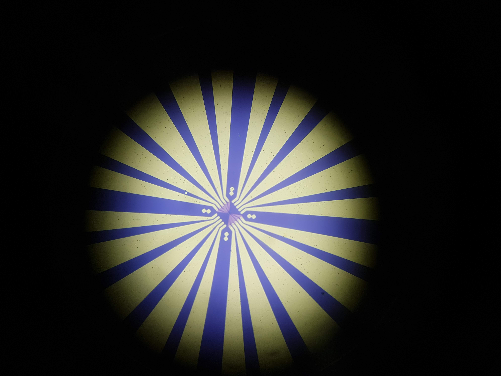
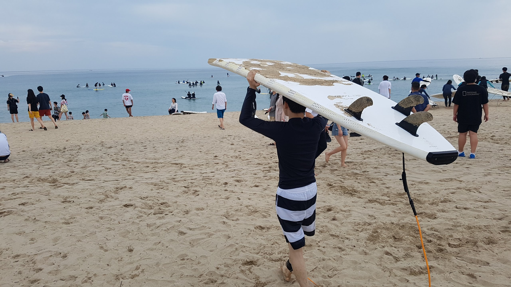

정보
저의 정보가 담긴 서브 페이지입니다.
1 / 9
친구와 필리핀 여행
2 / 9
바다 다이빙
3 / 9
서울생명사랑걷기 페이스메이커
4 / 9
우리집 강아지
5 / 9

학부연구생 시절 만든 nano-mosfet
6 / 9

친구와 서핑보드 연습
7 / 9
스노우보드 취미
8 / 9
서울-부산 자전거국토종주
9 / 9
장애인지도앱 제작
❮
❯
저의 추억이 담긴 사진들입니다.
다니던 학교 위치